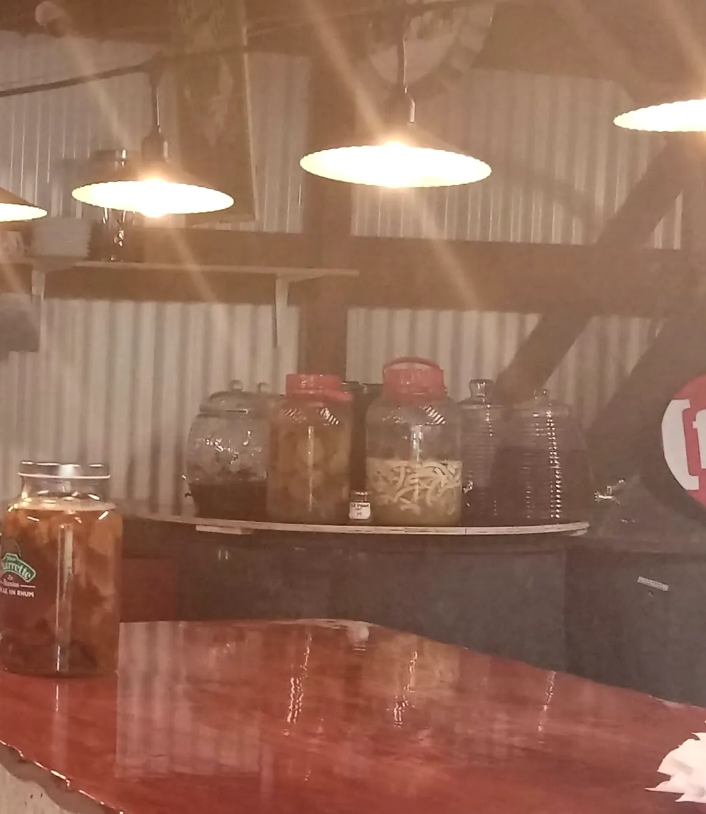
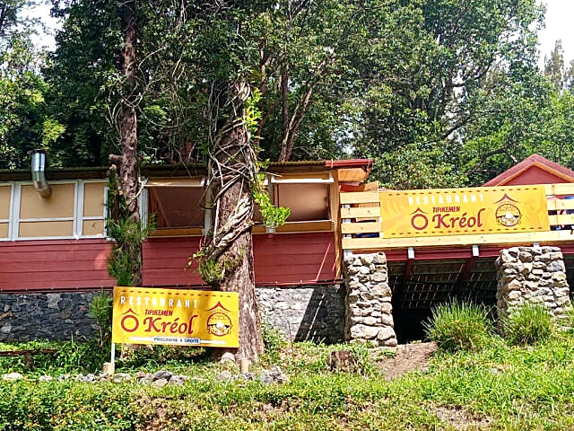
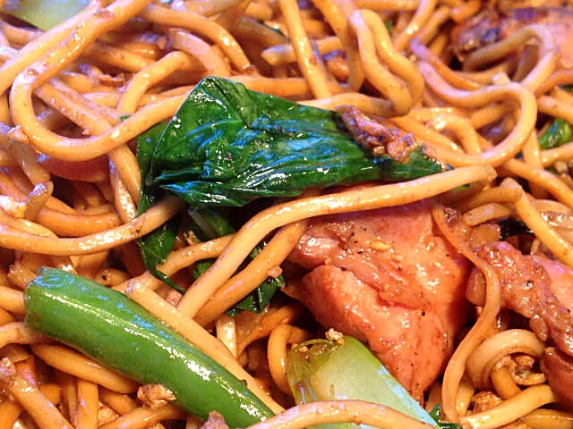
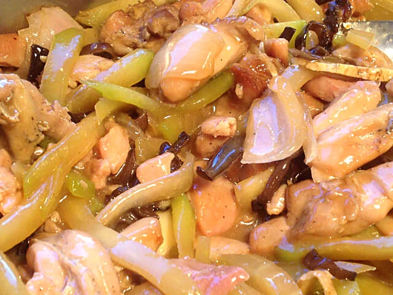
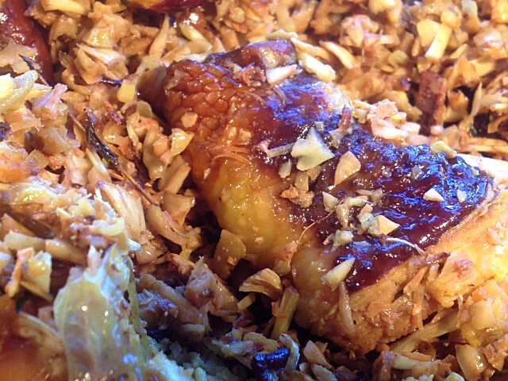
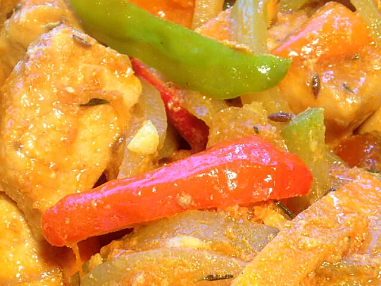
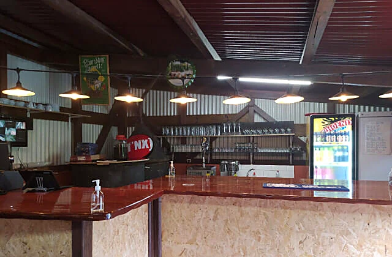
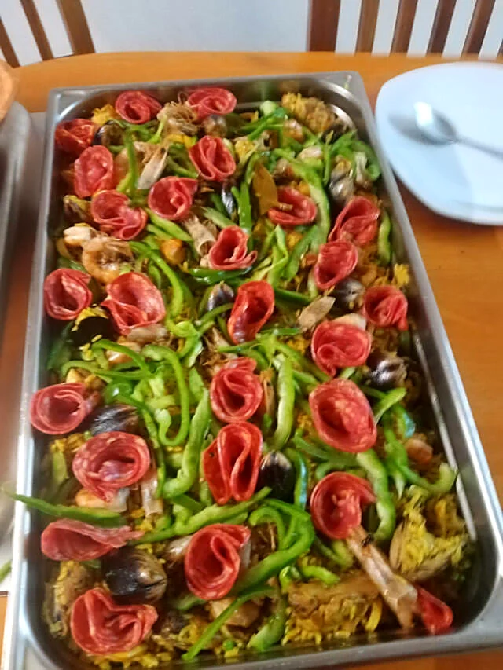
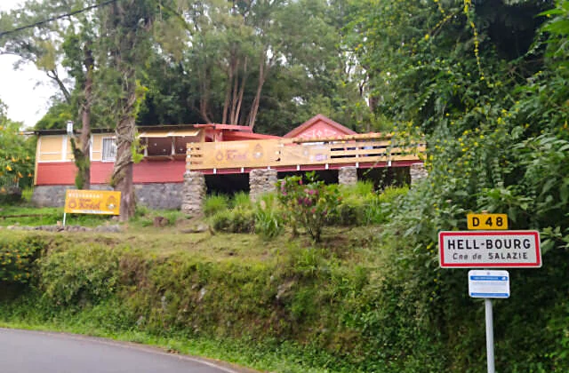

Restaurant · Hell-Bourg, cirque de Salazie
Chez BillyÔ Tipikemen Kreol
Une cuisine du terroir typiquement créole et une cuisine chinoise, avec des menus variés chaque jour, au cœur du village de Hell-Bourg.
10 impasse des Aubépines, Hell-Bourg · 0693 30 30 74

Le lieu
Une case rouge sous les grands arbres
Juste en haut de la route qui monte à Hell-Bourg, la case rouge de Chez Billy vous attend avec sa terrasse, ses piliers en pierre et sa salle de 40 couverts.
« Une cuisine du terroir typiquement créole et une cuisine chinoise. »
Un parking privé, une salle accessible aux personnes à mobilité réduite et des sentiers de randonnée tout autour : la halte idéale au cœur du cirque de Salazie.
La cuisine
Deux cuisines, une seule table
Des menus variés et différents chaque jour, entre la marmite créole et le wok.
Massalé cabri
Le massalé cabri, préparé avec le massalé maison et servi avec du riz à l'indienne.
Cuisine chinoise
Nouilles sautées, sautés aux légumes croquants et champignons noirs, pour varier les plaisirs.




Faites glisser pour voir les plats · photos publiées par Ô Tipikemen Kréol
Le comptoir
Sous les lampes, les bocaux
Un long comptoir en bois verni, des murs en tôle, une guirlande de lampes qui réchauffe la salle… et, posés en rang, les grands bocaux où macèrent les rhums arrangés.
Une ambiance de case créole, chaleureuse et simple, pour prolonger le repas en douceur.


Groupes & événements
Régalez toute la tablée
Chez Billy accueille les groupes, prépare la vente à emporter et vient aussi restaurer vos convives lors de vos événements.
« Merci de la confiance accordée pour restaurer vos convives à l'occasion de ce magnifique événement. »
Publié sur la page Chez Billy, le 9 août 2026
Offrir pour Noël
Un Noël au goût de Hell-Bourg
Un repas chez Billy à offrir
Une journée dans le cirque, une table créole ou chinoise : le cadeau qui se savoure à deux ou en famille.
Votre repas de fêtes en groupe
Famille, collègues, amis : réunissez toute la tablée à Hell-Bourg.
Les plats à emporter
La cuisine de Billy à partager à la maison, pour une table de fête toute simple.
Venir chez Billy
À l'entrée de Hell-Bourg
Adresse · 10 impasse des Aubépines, Hell-Bourg, 97433 Salazie
Téléphone · 0693 30 30 74
E-mail · billy.benoit974@gmail.com
Service · le midi, horaires du jour au téléphone
Pour venir · prendre la sortie de Salazie, suivre la route principale jusqu'à Hell-Bourg : le restaurant se trouve juste en haut, première à droite.
